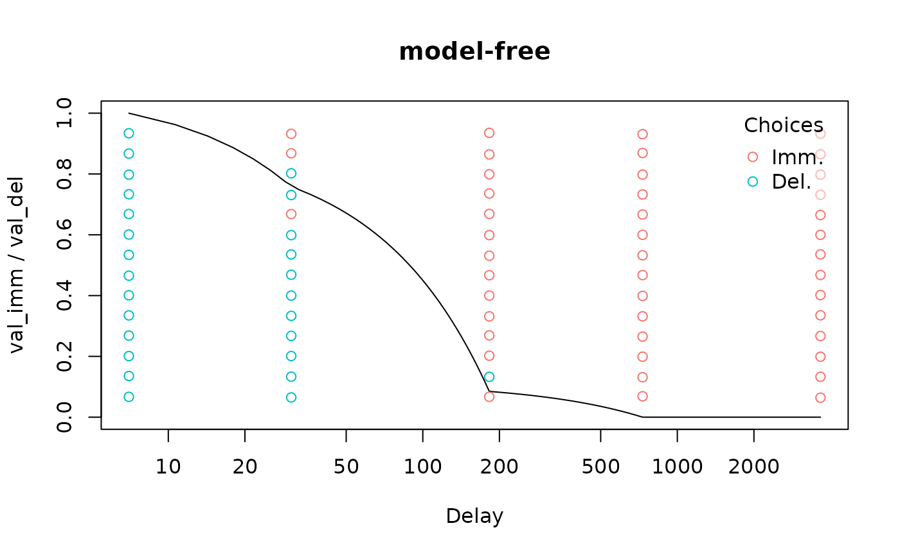

Indentifying non-systematic discounting
Source:vignettes/nonsystematic-discounting.Rmd
nonsystematic-discounting.RmdThe Johnson & Bickel criteria are often used to determine whether an individual exhibits “non-systematic” discounting:
- C1 (monotonicity): No indifference point can exceed the previous by more than 0.2 (i.e., 20% of the larger delayed reward)
- C2 (minimal discounting): The last indifference point must be lower than first by at least 0.1 (i.e., 10% of the larger delayed reward)
To check for non-systematic discounting, we first need to fit a “model-free” discount function to our data. Other discount functions are guaranteed monotonically decreasing, meaning the first criterion (non-monotonic discounting) can’t ever be met.
data("adj_amt_sim")
df <- adj_amt_indiffs(adj_amt_sim)
mod <- td_ipm(df, discount_function = 'model-free')
plot(mod, verbose = F)As we can see, this data meets the first criterion for non-systematicity but not the second:
nonsys(mod)
#> C1 C2
#> TRUE FALSEWe can do the same thing for binary choice data:
data("td_bc_single_ptpt")
mod <- td_bcnm(td_bc_single_ptpt, discount_function = 'model-free')
plot(mod, log = 'x', verbose = F)
This data meets neither criterion:
nonsys(mod)
#> C1 C2
#> FALSE FALSE